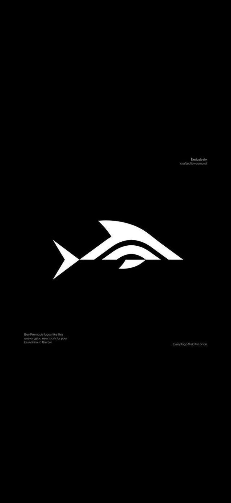

Ngegbe Invoice Parser
A Python project exploring PDF invoice extraction, Excel output, and human review of uncertain results. Currently being tested and refined.
Project details →
Emmanuel ArihilamFrankfurt am Main, Germany
Supply Chain Analyst, Data Engineer & Business Systems Professional
I bring experience across logistics operations, customs and Trade compliance, business data analysis, and clinical data. My work sits at the intersection of operational processes, reliable information, Databases and Technology.
I am expanding my technical capabilities in Python, SQL, Database Management systems, and AI-assisted business automation, with a long-term interest in Healthcare Technology and Finance.
Profile
My professional background spans logistics and customs operations, business data analysis, and clinical data.
Alongside my professional work and Master of Science in Information Technology, I develop practical projects in data processing, programming, and automation.
More about my experience →Selected work
A Python project exploring PDF invoice extraction, Excel output, and human review of uncertain results. Currently being tested and refined.
Project details →Analysis of bike-share usage patterns using data cleaning, SQL and visualisation to explore differences in rider behaviour.
View repository ↗Get in touch
I'm open to professional connections and relevant opportunities.